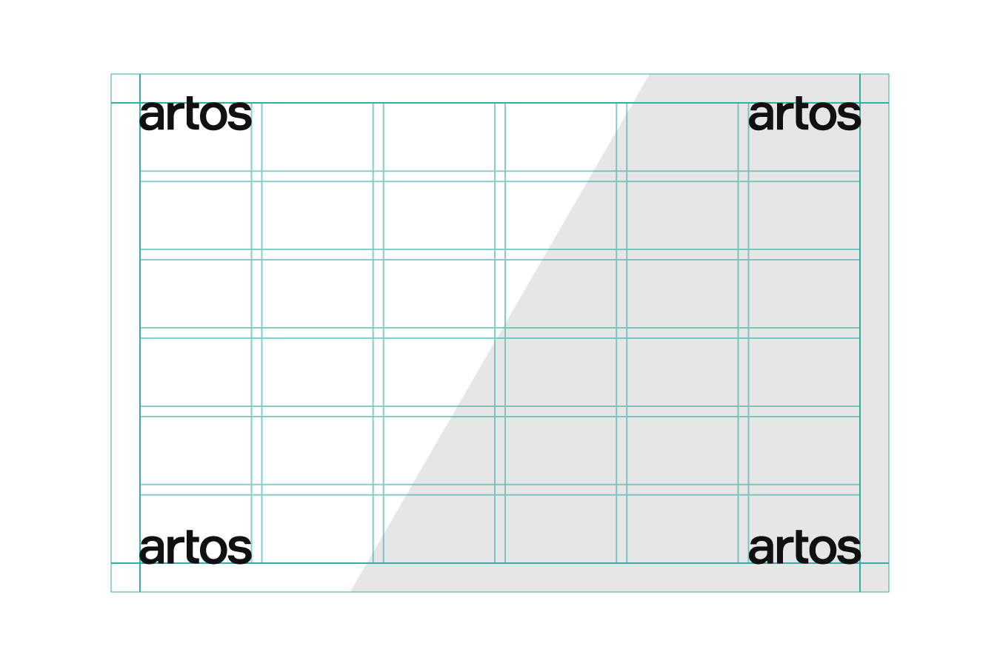

При использовании сетки и создании макетов мы используем правило «трех» в качестве отправной точки, которая информирует о многих наших дизайнерских решениях.
Основы расположения
Логотип

Базовое положения логотипа в большинстве материалах — по верхним и нижним углам. Однако допустимо размещать его по всем дополнительным позициям.
Смотреть все правила расположения логотипа.